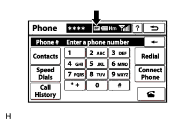

NAVIGATION SYSTEM (for DVD) > Cannot Call in a Certain Place |
| 1.CHECK SURROUNDING CONDITIONS |
Check if the cellular phone can make calls in the place where the problem occurred.
|
| ||||
| OK | |
| 2.CHECK RECEPTION |
|  |
Press the "INFO" switch and then select "Phone".
Check the "Bluetooth" connection indicator ("BT" indicator).
| Result | Action |
| Yellow color | Bring cellular phone to location where "BT" indicator turns blue |
| Blue color | Replace display and navigation module display |
| No connection indicator is displayed | Select registered cellular phone or register "Bluetooth" compatible phone |
| NEXT | ||
| ||